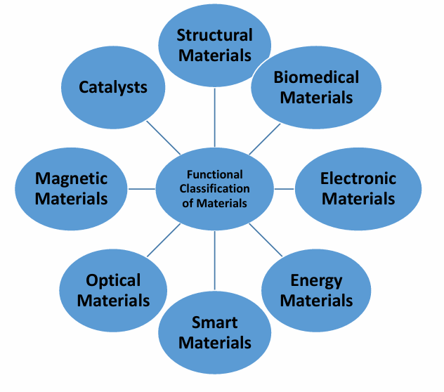

Conventional vs. Functional Classification
Traditionally, engineering materials have been classified based on their core Chemical, Mechanical, and Physical properties (dividing them into Polymers, Ceramics, Metals, and Composites). However, modern engineering has expanded to classify materials functionally—based on whether the most important function they perform is structural, biological, electronic, magnetic, optical, etc.

What is a Functional Material?
Functional materials are specially designed substances with a determined, dynamic function. Rather than just holding a load, these materials possess one or more properties that can be significantly changed in a controlled fashion by an external stimulus.
- Electrical Properties: Piezoelectricity, Ferroelectricity, Superconductivity.
- Optical Properties: Photoluminescence, Photochromism, Fluorescence.
- Magnetic Properties: Diamagnetism, Ferromagnetism, Paramagnetism.
- Chemical Properties: High reactivity, Catalytic behaviors.
Device Engineering Integration
In devices based on functional materials, the material acts as the "active" component that performs the function. However, the raw functional material alone is useless for practical applications without proper device architecture and integration into a larger system.
Practice Exercises
Test your knowledge on Functional Materials.
1. How does a "Functional Classification" differ from a "Conventional Classification"?
A) It strictly groups materials into Metals, Ceramics, and Polymers
B) It classifies materials based on the specific dynamic role they perform (e.g., electronic, biological, optical)
C) It only applies to materials found naturally in the earth
2. What is the defining characteristic of a Functional Material?
A) Its properties can be significantly changed in a controlled way by external stimuli
B) It serves purely as an inert structural support
C) It completely resists any changes to temperature or pressure
3. Piezoelectricity and Superconductivity fall under which category of functional properties?
A) Optical Properties
B) Magnetic Properties
C) Electrical Properties
4. Which of the following is an example of an optical functional property?
A) Photoluminescence
B) Diamagnetism
C) Capacitance
5. What limits a raw functional material from being used directly in a practical application?
A) It degrades when exposed to the atmosphere
B) It requires integration into a proper device architecture to utilize its function
C) It requires absolute zero temperatures to function